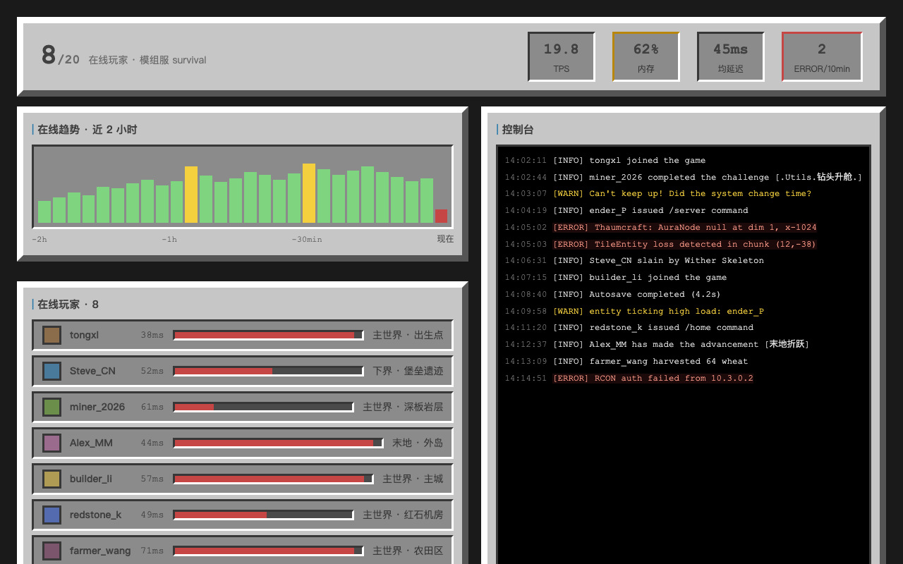
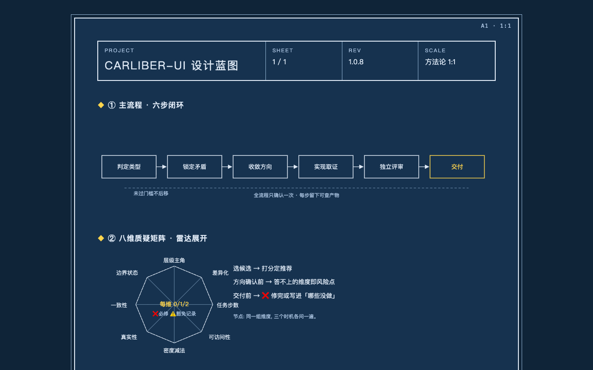

编造的需求,真实的流程。用 Minecraft 原版材质语言造一个"游戏里不存在的界面",检验技能的基线复用、lint 抓缺陷、矩阵终检与多轮收敛是否真的在工作。

用户/场景/功能范围五块/约束/验收标准/明确不做——模拟数据在需求书就声明标注,真实性维度前置。
00-需求书.md产品工作区。主要矛盾:全服态势一眼可判 vs 五类指标的信息洪流——"服务器正常吗"必须 5 秒不滚动可答。次级张力(MC 视觉密度 vs 数据密度)的处置:控件级严格复刻,布局级自由编排。
01-类型与矛盾.md北极星"一眼知健康,三击达操作"。镜像测试:主流 MC 面板全是扁平白卡,本页原版材质贯穿——差异化成立,不撞脸。
02-方向卡.md文字线框排层级:在线人数唯一主角,操作条唯一动作组。删掉登录横幅、logo、世界时间——每删一项都在档。
▓ 顶部条: ★在线 8/20 ▏TPS▏内存▏延迟(阈值变色) ┏━ 62% ━━━━━━━━━━┓ ┏━ 38% ━━━━━┓ ┃ 趋势直方图 28柱 ┃ ┃ 控制台 40条 ┃ ┏━ 62% 玩家表 8行 ━┓ ┗━━━━━━━━━┛ ▓ 操作条: [公告][传送][白名单][备份]
03-灰度结构.md写完先自查,抓到 emoji 当图标——像素材质语境硬伤,截图前就修掉,没浪费一轮取证。
cockpit.html(单文件零依赖)首轮 13 处对比度违规:警示黄字放在灰色槽底上 1.05:1,完全不可读。修正方案:语义色改走边框(符合 widgets 语言),文字恒深色。复验清零。
shots/page.png + report.json8 维逐检:揪出空态缺失(❌必修)→ 实现"服务器空闲中,猫在后台睡觉"空态并出验证截图;800 宽窄档复验无横向滚动;两处豁免全部记录理由。
04-评审与矩阵.md · 证据:shots/empty/ shots/narrow/终评 8.6 ≥ 8.5 且无 ❌ —— 触发多轮收敛的停止条件,不再迭代。知道什么时候停,和知道怎么改一样重要。
警示语义 = 文字变黄(#b8860b)放在灰色槽底(#8b8b8b)上——对比度 1.05:1,人眼基本不可见。"颜色即状态"的设计意图直接失效。
语义走 3px 警示色边框(widgets 语言内的表达),文字恒深色 #404040。状态一眼可辨,可读性达标,材质语言未被破坏。
| 维度 | 判定 | 一句话依据 |
|---|---|---|
| 层级与主角 | ✅ | 在线人数唯一主角;主动作首屏可达 |
| 差异化 | ✅ | 镜像测试:主流面板全扁平白卡,不撞脸 |
| 任务与步数 | ✅ | 健康 0 点击,操作 1–2 击 |
| 可访问性 | ✅ | 对比度修复后 lint 清零 |
| 密度与减法 | ✅ | 删除清单执行,无装饰区块 |
| 真实性 | ✅ | 模拟数据双重标注,零伪造指标 |
| 一致性与系统 | ⚠️ 豁免 | 2 个语义色为像素语境新建,理由已记录 |
| 边界与状态 | ✅ | 空态与窄档修复后截图闭环 |
这次走流程时,方向卡最初用了无依据的 1440×900 当判定视口——被当场抓住。追查发现技能文档里写着写死的视口值,于是技能当场升级到 v1.0.3:视口判定全部去固定值,改为按产品环境从常见档位表选型,尺寸写法确立 clamp()/vh/vw/% 优先原则。校准不是走过场,流程和技能本身一起被修。
此后循环仍在继续(R10 键盘走查、R11 断线态、R12 加载态、R13 极端数据、R14/R15 窄屏、R17 1.20.1 贴图实证、R20 色盲模拟),全部归因进了技能规则——最新状态见仓库 CHANGELOG.md 与 README 训练循环节。

技能、基线、本档案全部在仓库里。克隆后把 SKILL.md 放进你的 Agent 技能目录,下一个界面任务它就会开始工作。
→ GitHub 仓库 · ← 返回主页 · 原型本体:cockpit.html(可在线操作) · 全部八步档案:docs/cockpit-demo/